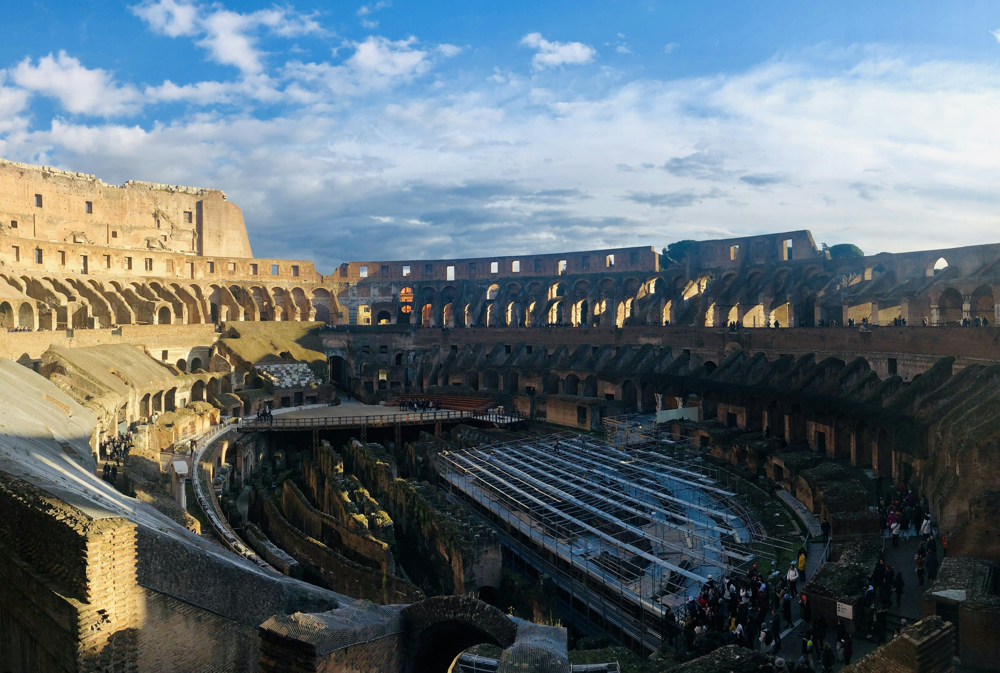
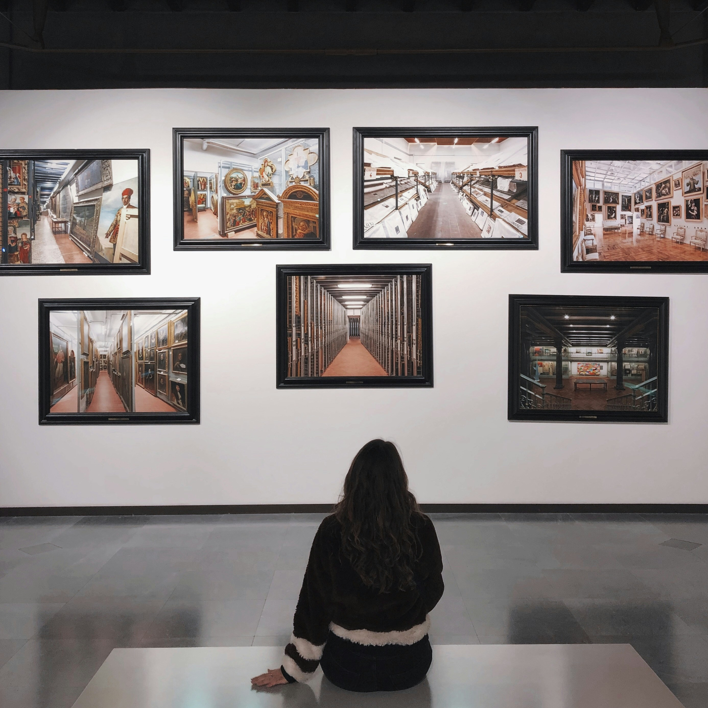

Gladiators
Learn More
Step inside Ancient Rome’s most iconic monument — where history, architecture, and spectacle collide.
The Colosseum is the largest amphitheater ever built by the Roman Empire and one of the most ambitious architectural projects of the ancient world. Completed in AD 80 under Emperor Titus, this monumental arena became the heart of Roman public life. Designed to impress and control massive crowds, it hosted gladiator battles, animal hunts, public executions, reenactments of famous battles, and elaborate spectacles that blended violence, politics, and entertainment. With seating for more than 50,000 spectators from all levels of Roman society, the Colosseum was not just a venue—it was a powerful symbol of imperial authority, engineering mastery, and Rome’s ability to unite its people through grand shared experiences.


Beyond its role as an entertainment venue, the Colosseum functioned as a powerful instrument of Roman society. Free public games were sponsored by emperors to gain public favor, celebrate military victories, and reinforce Rome’s dominance across the empire. Its carefully organized seating reflected strict social hierarchies, while advanced crowd-control systems allowed tens of thousands of people to enter and exit efficiently — a concept still used in modern stadium architecture today.

Learn More
Learn More

Learn More
The Colosseum’s oval shape ensured excellent visibility from every seat, creating an immersive experience for spectators regardless of social class or seating position.
A complex underground network of tunnels, cages, lifts, and pulleys allowed animals and gladiators to appear dramatically on the arena floor, astonishing the crowd.
A massive retractable awning, operated by sailors, shielded spectators from sun and rain — an advanced comfort feature rarely matched until modern times.
Tap each card to uncover surprising facts that reveal the hidden stories, engineering marvels, and social dynamics behind the Roman Colosseum.